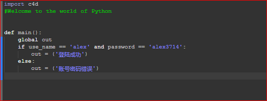
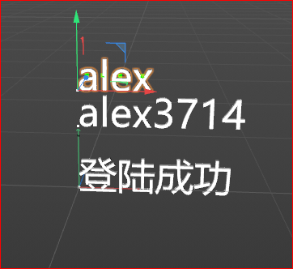
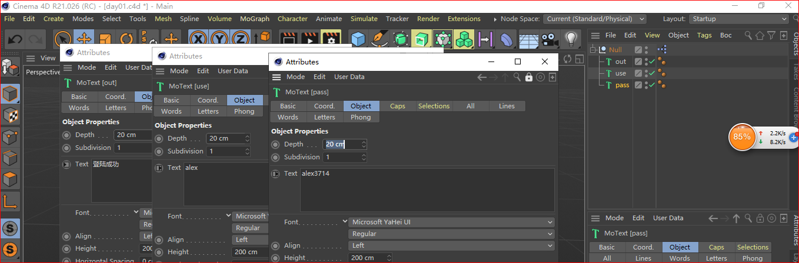

原文出处:本文由博客园博主rustygear提供。
原文连接:https://www.cnblogs.com/rustygear/p/11681217.html
原文连接:https://www.cnblogs.com/rustygear/p/11681217.html
use_name = input('请输入账号')
password = input('请输入密码')
if use_name == 'alex' and password == 'alex3714':
print('登陆成功')
else:
print('账号密码错误')这是一个用python写的判断账号密码的一小段代码
在C4D中如何用xpress可以实现？


- 从中可以看，c4d的xpress的python没有input和print，取而代之的是左右两端的接口
- 同时在代码中有print的地方也需要修改
- python节点变量名称和输出类型一定要正确

